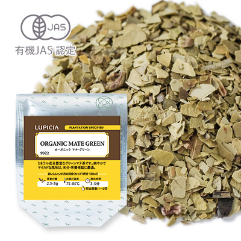
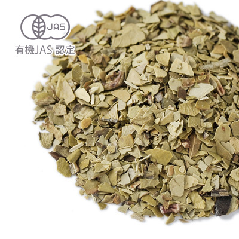

LUPICIA 9022 · g12409022
오가닉 마테 그린
オーガニック マテ・グリーン
ORGANIC MATE GREEN
아이스티 추천


ミネラル成分豊富なアルゼンチン産のグリーンマテ茶。くせのない爽やかでマイルドな風味は、水分・栄養補給に最適です。（有機JAS認定）
【マテ茶】
モチノキ科の常緑樹であるハーブの一種・マテの葉でつくられます。
南米諸国では毎日のように飲まれ、コーヒー・紅茶と並び世界三大飲料のひとつで、ミネラル成分を豊富に含みます。※紅茶などに比べ、カフェイン量が少ないというデータもありますが、ローカフェインといえるほど少ないわけではありません。
【産地情報】
アルゼンチン・ミシオネス州 イグアスの滝がある世界遺産イグアス国立公園の周辺。マテ茶の産地として有名なエリアの中でも、有機栽培にこだわるルイス・デ・モントージャ農協のもの。
【詳細情報】
有機JAS認定（日本）・アルゼンサート認定（アルゼンチンの有機認証）取得。
製造工程を終えた後、アルゼンチンでは平均1〜2年熟成させるマテ茶。ルイス・デ・モントージャ農協のグリーン・マテはたっぷりと2年熟成したマテの、茎などを取り除いた上質な部分だけを使用。数ある産地の中でもアルゼンチン産のグリーン・マテには定評があります。
くせがなく、マイルドでさっぱりとしたのど越しは水分・栄養補給に最適です。アイスティーにおすすめ。
- 상품번호
- 9022
- 상품 형태
- 50g 봉입
- 가격
- 550円 【취급종료】
- 판매 안내
- 2023년11월8일（水）부터 이쪽의 상품에 대해서, 현재 고분이 매진되는 대로 폐번으로 하겠습니다.
아무쪼록 이해의 정도, 잘 부탁드립니다.
※상미기한：제조일로부터2년
※이쪽의 상품에는, 임신중에 피해 주신 것이 좋다고 말해지고 있는 허브가 포함되어 있습니다.사용 시에는 의사와 상담하시기를 권합니다. - 원재료
- オーガニック マテ茶※商品の改定などにより、商品パッケージの記載内容が上記内容と一部異なる場合がございます。
- 원산지
- アルゼンチン※商品の改定などにより、商品パッケージの記載内容が上記内容と一部異なる場合がございます。
- 찻잎
- 2.5-3g
- 물
- 75-85℃
- 우림 시간
- 3-5分
- 우림 횟수
- 1-2回
다른 포장
보관된 상품 정보 갱신일: 2025-01-10